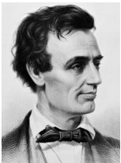

Amerikan tarihindeki en büyük başkan olarak takdir edilen Abraham Lincoln (1809-1865), Birlik’i bir arada tutan ve köleliğin sonunu getiren İç Savaş’ta (1861-1865) ulusu yönetti. Kentucky’de doğan Lincoln, 1860’da Illinois’den Beyaz Saray’a seçildi. 1865’de General Robert E. Lee komutası altında Konfederasyon Ordusu’nun Appomattox Adliye Sarayı’nda teslim olmasından sadece birkaç gün sonra, gözü dönmüş bir Güneyli fanatik tarafından bir tiyatroda trajik bir şekilde suikasta kurban gitti. Lincoln’ün liderliği altında Amerika Birleşik Devletleri savaşı kazandı, ama Lincoln barışı görecek kadar yaşamadı.

Lincoln melankoliye meyilli, sırık gibi sevimsiz bir adamdı. Modern bilim, depresyondan muzdarip olmuş olabileceğini öne sürdü. Başkan olmadan önce, Lincoln’ün siyasi tecrübesi birkaç yerel ofisteki görevi ve 1847-49 arası ABD Temsilciler Meclisi’nde bir dönemi kapsar. 1855’te ABD Senatosu için olan yarışı kaybetmiştir.
Ama az talihli başlangıcına rağmen Lincoln, başkanlık yarışını kazanan en kararlı ve kesinlikle hitabeti en kuvvetli adamlardan biri oldu. Lincoln, Birlik’i korumanın tüm bedelleriyle gerekli olduğuna inandı. Lincoln, Amerika Birleşik Devletleri olmaksızın şekillenmiş cumhuriyetçi ideallerin “yeryüzünden silineceğini” hissetti. Başkanların konuşma metni yazarları ortaya çıkmadan çok önce Lincoln, Amerikalılar’ı savaşın zorluklarına dayanmak için ikna ettiği dokunaklı konuşmalar hazırladı. 1864’te, savaşı bitirme sözü veren bir adaya karşı, Lincoln’ün Amerikalılar’ı korkunç kayıplara rağmen Birlik’in hedefi doğrultusunda bir arada tutma becerisini yansıtan bir zaferle yeniden Beyaz Saray’a seçildi.
Lincoln’ün çok az askerî tecrübesi vardı, ama generallerini yetkisiz bırakmakta tereddüt etmedi. Bir alkolik olduğu söylentilerine rağmen, Lincoln General Ulysses S. Grant’ı Birlik’in çabalarını yönetmek üzere güvendiği bir lider olarak gördü, “Grant’ın içtiği viskinin markasını bana söyleyin... Ondan bir varil diğer generallerime de göndermek isterim” diyerek Grant’ı savunmuştu.
Lincoln ölümünden önce, isyanın liderlerini cezalandırmadan evvel cesur bir şekilde Güney eyaletlerinin Birlik’e yeniden katılmasına izin vermeyi planlamıştı. Suikasta kurban gitmesi Başkan Andrew Johnson’ı göreve getirmişti. Grant, Lincoln için “Güneyin sahip olabileceği en iyi dost olduğunu ispatlamıştı.” diye yazdı. “Kalbinin iyiliğini, cömertliğini, vericiliğini, herkesi mutlu etme isteğini ve her şeyden öte Amerika Birleşik Devletleri halklarının, herkesin eşit olduğu yurttaşlığın tüm ayrıcalıklarına tekrar kavuştuğunu görme arzusunu biliyordum.”
EK BİLGİ:
1. Lincoln’ün suikastçisi, İngiltere eski başbakanı Tony Blair’in uzaktan bir akrabası ve tanınmış bir Shakespeare aktörü olan John Wilkes Booth’tı. Ateş ettikten sonra Booth, Birlik askerleri tarafından köşeye sıkıştırılıp teslim olmayı reddetmesinin ardından, öldürüldüğü Maryland’e kaçmıştı.